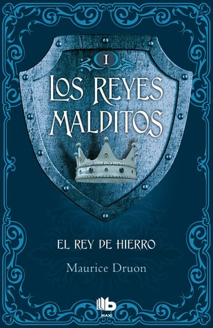

El rey de hierro (Los reyes malditos, #1)
Reseña por Jorge I. Zuluaga

Ver reseña en GoodReads (necesita cuenta)
Como seguro leyeron en la descripción, en este primer libro, "El rey de hierro" la historia gira alrededor del final de la orden de caballería de los templarios, los caballeros del Templo de Salomón o del Temple simplemente. Los caballeros templarios fueron una de las más importantes organizaciones religiosas y militares de la baja edad media, muy famosa por el atuendo de sus caballeros que se ataviaban con una túnica blanca atravesada por una enorme cruz roja y que sembraron el terror en el medio oriente durante las cruzadas.
El "rey de hierro", el primer libro de la saga, es "Felipe el Hermoso" o Felipe IV, rey de Francia a finales de los 1200 y principios de los 1300, artífice precisamente del fin de la poderosa orden de los templarios. Estos caballeros, que en el inicio del reinado de Felipe el hermoso sumaban más de un millar de integrantes, después de abandonar sus labores como mercenarios de los tronos europeos se habían convertido en poderosos terratenientes y banqueros y por la misma razón en acreedores de los nobles y reyes que alguna vez financiaron sus actividades militares. Fue precisamente esta la razón que los llevo a convertirse en el objetivo de la persecución de reyes y nobles, hechos que narra parcialmente esta novela.
Amas y odias, o haces ambas cosas por igual, al aparentemente inconmovible rey de hierro, que aunque es retratado en la mayor parte de la novela como un individuo sin emociones, despótico, frío y calculador encuentra su oportunidad hacia el final de la novela para ganarse alguna simpatía de los lectores. Me paso de forma similar con su casi igualmente fría y calculadora hija, Isabel de Francia (otra Isabel), reina consorte de Inglaterra, que no escatima acciones para mantener la imagen de la corona, aún si con ello debe también sacrificar sus propios impulsos humanos. O el poderoso y vengativo conde Roberto de Artois, protagonista de la historia paralela que se desarrolla en la novela y que nos da los momentos más íntimos, los menos políticos, de la vida en la corte de Francia de la época. En otro hilo de la trama conocemos también con detalle al vivaz Guccio Baglioni, uno de los personajes ficticios recreados por Druon, es decir que no se corresponden con un personaje histórico, pero que aportan una imagen fiel de la función que cumplían los banqueros italianos en aquella época, pero también sobre cómo funcionaban las relaciones personales de los jóvenes fuera de la corte.
Comentario sobre la saga en general:
Vi esta saga en librerías muchas veces sin animarme a leerla. Pensaba que se trataba de una serie de novelas que se desarrollaban en una supuesta edad media en un planeta ficticio, tal y como lo hace, por ejemplo, la saga de "Canción de fuego y hielo" (Juego de tronos) de George Martin (que descubrí, después, había confesaba haberse inspirado en "Los reyes malditos" para su propia saga).
Es cierto que pude leer la contraportada o las reseñas aquí mismo en Good Reads, pero de solo pensar en meterme en una obra de fantasía histórica, con personajes y mundos que nunca existieron, me daba pereza hasta voltear los libros para salir de dudas.
Esto fue hasta que escuche hablar maravillas de la saga a un buen amigo (Pablo Cuartas), amante también de la novela histórica y a decir verdad la persona que me inició en este genero. No necesitaba más razones: tenía que empezar a leerla.
Me complació mucho comprobar, primero, que los libros de "Los reyes malditos" giran alrededor de hechos reales, que recrean la vida de personajes que existieron. Naturalmente el autor se da algunas licencias en la descripción pormenorizada de sus vidas o de los hechos que ocurrieron en el tiempo en el que se desarrolla la novela, pero es verdadera historia. Lo segundo que me complació comprobar es que la novela narra algunos de los eventos más importantes en la historia de la Europa tardomedieval, un período que me ha interesado desde que leí la saga medieval de Ken Follet.
Me sorprendió también descubrir que se trata de una serie de libros escritos hace más de 60 años, es decir, y como dice el dicho en redes sociales, "millenials descubren a Maurice Druon" (no soy milenial, pero casi).
Las novelas están escritas de forma impecable, combinando descripciones detalladas de la Francia burguesa de la época, en especial del Paris de los 1300, la vida en las calles de la ciudad, en los palacios y la corte de los Francos. Lo que más me impresionó de esta primera novela y que espero seguir disfrutando en las otras novelas de la saga fue el desarrollo de los personajes. Siempre he admirado la capacidad de los y las autoras de novela histórica para meterse en el cuerpo y en la mente de seres humanos que habitaron otros tiempos.
Maurice Druon, usando una prosa elegante y limpia, que se me hizo más cercana al teatro que a la novela, revela a través de diálogos la personalidad de los protagonistas, que abundan en la novela, al punto que, al terminar, da la impresión que los conoces bien a casi todos, incluso a aquellos que solo dicen una o dos cosas en toda la historia.
Si les gusto la saga fantástica de George Martin hay que leer definitivamente Los reyes malditos, que, en palabras del mismo Martin, es el juego de tronos original.